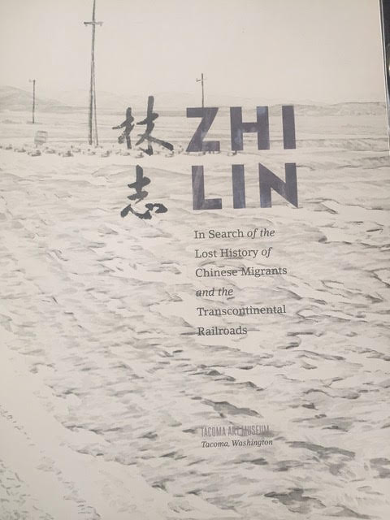
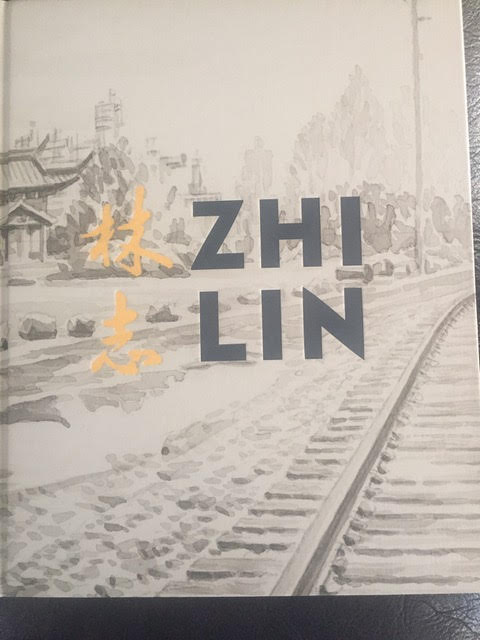
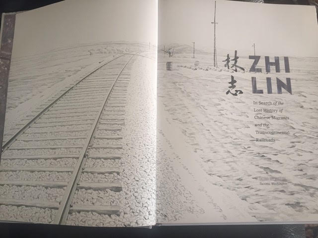

Shelley Fisher Fishkin, Co-Director of the CRRW Project, contributed an essay to Zhi Lin: In Search of the Lost History of Chinese Migrants and the Transcontinental Railroads, the exhibition catalogue accompanying the current exhibit by artist Zhi Lin at the Tacoma Art Museum. Fishkin attended the opening of the exhibit on June 27 and signed books with fellow contributors, Zhi Lin and novelist Shawn Wong.
{kind=link}
Shawn Wong (left), Zhi Lin (center) and Shelley Fisher Fishkin (right) holding the exhibition catalogue. (Photo courtesy of Shelley Fisher Fishkin)
Fishkin’s essay, entitled “Seeing Absence, Evoking Presence: History and the Art of Zhi Lin,” explores the history of the Chinese who built the Central Pacific Railroad and the Northern Pacific Railroad, and who sustained the Union Pacific railroad by mining the coal that fueled the engines of its trains. They were rewarded for their efforts with gratuitous violence and expulsion from the communities they had done so much to build, including Tacoma.

(Photo by Shelley Fisher Fishkin)
In “Invisible and Unwelcomed People: Chinese Railroad Workers,” Zhi Lin evokes terrains on which the Chinese worked, lived, and died—with no Chinese in them. He paints hauntingly empty landscapes of the American West that the Chinese changed forever—scenery that the Chinese railroad workers inhabited as they built and maintained the railroad—but with none of the workers themselves in the picture. He aims to do more than commemorate the Chinese role in transforming the American West: he wants to help his viewer become aware not only of what they did, but also of their erasure in the stories the nation has told about itself to itself. By helping us to see these workers’ absence, Fishkin notes, Zhi Lin manages to evoke their presence.
{kind=link}
Chinese Reconciliation Park, 2017. Chinese ink on paper, 8¾ × 12 inches.
Via Zhi Lin and Koplin Del Rio Gallery, Seattle. (Source: Tacoma Art Museum)
There are surface resemblances between Zhi Lin’s work and that of Western landscape artists such as Thomas Girtin and John Constable on the one hand, and an Eastern landscape artist like the 11th-century Northern Song dynasty artist Qu Ding. But, as Fishkin observes, while drawing his inspiration from both Eastern and Western artistic traditions, Zhi Lin challenges the adequacy of either to do justice the complicated history that his art engages. The most recent work in the exhibition, which Fishkin also discusses, deals specifically with the violent expulsion of the Chinese from Tacoma in 1885.
As he visually and verbally evokes the presence of the “invisible and unwelcomed” Chinese railroad workers whose Herculean feats helped America become a thriving modern nation, Zhi Lin reminds us of the power of art to illuminate the complexity of the past.
Fishkin will speak on a panel with Zhi Lin in Tacoma on November 3, the anniversary of the Chinese expulsion from Tacoma. The exhibit will be on display at the Tacoma Art Museum through February 18, 2018.
About the Exhibit
Find out more about the exhibition here: http://www.tacomaartmuseum.org/exhibit/zhi-lin
Read about the expulsion of the Chinese from Tacoma here: http://www.tacomachinesepark.org/tacoma-chinese-park/expulsion-the-tacoma-method and here http://www.seattletimes.com/seattle-news/remembering-washingtons-chinese-expulsion-125-years-later
Watch a public television documentary about Chinese expulsions (and reconciliation efforts underway today): https://www.youtube.com/watch?v=5ntWiq8UfGE


Images from the exhibition catalogue Zhi LIN: In Search of the Lost History of Chinese Migrants and the Transcontinental Railroads
(Photos by Shelley Fisher Fishkin)